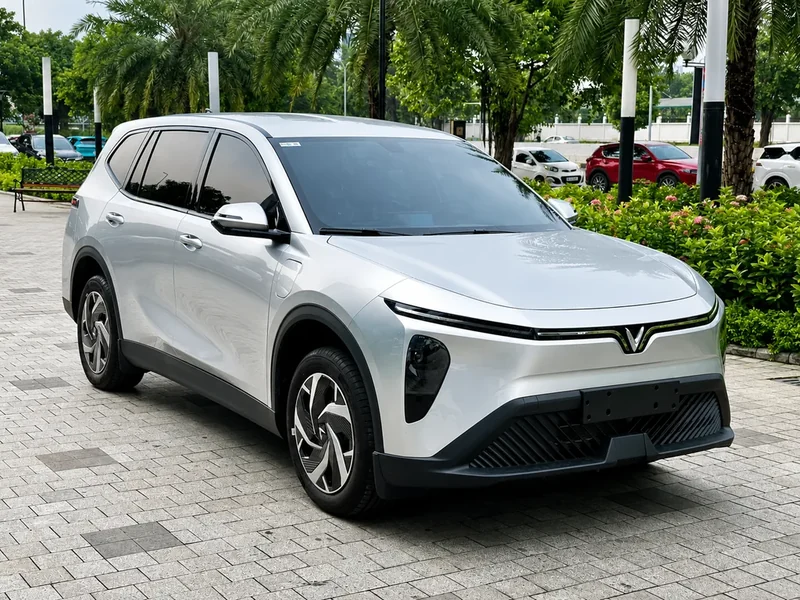
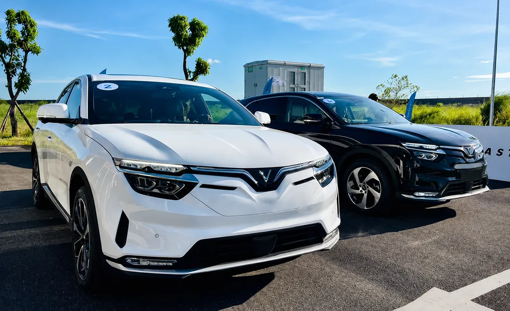

Xe Ghép Tiện Chuyến
Giải pháp tiết kiệm chi phí tối đa. Đi ghép xe 5-7 chỗ cùng hành khách khác với giá siêu rẻ, nhưng vẫn đảm bảo đón trả tận nhà cực kỳ an toàn và đúng giờ cam kết.
Giá chỉ từ250K/ người
THÁI BÌNH HÀ NỘI NỘI BÀI
Xe ghép tiện chuyến, bao xe riêng 4–7 chỗ và đưa đón sân bay. Chọn chuyến đi phù hợp — nhà xe đón bạn ngay tại cửa.
Chúng tôi là đơn vị tiên phong cung cấp giải pháp vận chuyển chất lượng cao chuyên tuyến Thái Bình ↔ Hà Nội ↔ Sân Bay Nội Bài.
Nhà xe phục vụ xe gia đình 4–7 chỗ, xe ghép tiện chuyến, thuê xe riêng và đưa đón sân bay. Hãy liên hệ để trao đổi điểm đón, điểm trả và loại xe phù hợp với hành trình của bạn.
✓Dịch vụ 24/7: Bất cứ lúc nào khách hàng cần, nhà xe luôn có lái xe sẵn sàng phục vụ.
✓Đón trả tận nhà: Tiết kiệm tối đa thời gian và chi phí đi lại ra bến xe cho quý khách.

Chuyên cung cấp các dịch vụ đưa đón đa dạng tuyến Thái Bình ⇔ Hà Nội - Nội Bài
Giải pháp tiết kiệm chi phí tối đa. Đi ghép xe 5-7 chỗ cùng hành khách khác với giá siêu rẻ, nhưng vẫn đảm bảo đón trả tận nhà cực kỳ an toàn và đúng giờ cam kết.
Bao xe taxi gia đình riêng tư hoàn toàn (không ghép người). Thích hợp đi gia đình, công tác, gặp đối tác, đám cưới hỏi. Thời gian đi linh hoạt theo lịch trình riêng của bạn.
Chuyên tuyến đưa đón sân bay Nội Bài ↔ Thái Bình 24/7. Lái xe am hiểu đường đi, theo dõi sát sao giờ bay của bạn để đón đúng sảnh sân bay, cam kết không trễ chuyến bay!
Cam kết mang lại trải nghiệm đi xe ghép an toàn, chất lượng và tin cậy nhất cho quý hành khách
Lái xe am hiểu tuyến đường, kinh nghiệm lâu năm, luôn chấp hành đúng luật giao thông, đặt sự an toàn của hành khách lên trên hết.
Dàn xe gia đình 5-7 chỗ (Vios, Xpander, VF8...) luôn được vệ sinh khử khuẩn sạch sẽ trước mỗi chuyến đi, cam kết không mùi xe, thoải mái như xe nhà.
Không quay đầu, không dồn khách, không bắt khách dọc đường. Đảm bảo đón trả đúng giờ cam kết để không làm lỡ công việc của bạn.
Phục vụ đưa đón chu đáo tận cửa nhà ở cả đầu Thái Bình (tất cả các huyện) và đầu Hà Nội (tất cả các quận nội thành, bệnh viện, trường học).
Chiêm ngưỡng dàn xe gia đình 5 – 7 chỗ sang trọng, sạch sẽ, sẵn sàng đưa đón bạn an tâm trên mọi hành trình

Xe 5 Chỗ Đời MớiPhù hợp ghép lẻ khách, đi công tác, đưa đón sân bay nhanh chóng
Giá vé minh bạch, cam kết đón trả tận nơi tại nhà.
| ĐI/ĐẾN | ĐI/ĐẾN | 1 NGƯỜI | 2 NGƯỜI | THUÊ XE 5 CHỖ | THUÊ XE 7 CHỖ |
|---|---|---|---|---|---|
| 📍 Hà Nội | 📍 Hưng Hà | 250K | 500K | 700K | 800K |
| 📍 Hà Nội | 📍 TP Thái Bình | 300K | 500K | 850K | 950K |
| 📍 Hà Nội | 📍 Vũ Thư | 300K | 500K | 850K | 950K |
| 📍 Hà Nội | 📍 Đông Hưng | 300K | 500K | 850K | 950K |
| 📍 Hà Nội | 📍 Tiền Hải | 300K | 550K | 850K | 950K |
| 📍 Hà Nội | 📍 Kiến Xương | 300K | 550K | 850K | 950K |
| 📍 Hà Nội | 📍 Quỳnh Phụ | 300K | 500K | 850K | 950K |
| 📍 Hà Nội | 📍 Thái Thụy | 300K | 550K | 850K | 950K |
✓Bảng giá đã bao gồm toàn bộ chi phí cầu đường, phí cao tốc (BOT), xăng dầu và lương tài xế.
✓Hỗ trợ hủy chuyến hoàn toàn miễn phí trước giờ khởi hành tối thiểu 2 tiếng.
✓Nhận gửi kèm hàng hóa, bưu phẩm siêu tốc nhận trong ngày tuyến Thái Bình ↔ Hà Nội.
Giải đáp nhanh các thắc mắc phổ biến nhất của quý hành khách khi đặt xe ghép Thái Bình ⇔ Hà Nội 24H
Giá xe ghép Thái Bình ⇔ Hà Nội từ 250.000đ/khách (tuyến TP Thái Bình, Đông Hưng, Hưng Hà, Vũ Thư), 280.000đ với tuyến Quỳnh Phụ, Kiến Xương và 300.000đ với tuyến Thái Thụy, Tiền Hải. Tuyến đưa đón sân bay Nội Bài từ 450.000đ. Giá đã niêm yết trọn gói, đón trả tận nhà, không phụ thu cầu đường. Nhắn Zalo 083 580 2222 hoặc gọi Hotline 083 580 2222 để đặt xe.
Thời gian di chuyển từ Thái Bình lên Hà Nội khoảng 1,5 - 2 giờ tùy huyện, đi qua cao tốc Hà Nội - Hải Phòng - Pháp Vân. Xe ghép Thái Bình ⇔ Hà Nội 24H chạy liên tục 30 phút một chuyến suốt 24/7, nên quý khách có thể chủ động chọn giờ đi phù hợp.
Để đặt xe ghép Thái Bình ⇔ Hà Nội, quý khách gọi Hotline 083 580 2222 hoặc nhắn Zalo 083 580 2222, cung cấp điểm đón, điểm trả, giờ đi mong muốn và số lượng khách. Tổng đài xác nhận chuyến trong ít phút và bố trí xe đón tận nhà đúng giờ hẹn.
Có, nhà xe phục vụ đưa đón sân bay Nội Bài 24/7, kể cả đêm muộn và sáng sớm theo đúng giờ bay của quý khách. Xe đón tận nhà tại Thái Bình và trả đúng sảnh T1/T2 sân bay Nội Bài, giá trọn gói từ 450.000đ.
Tại đầu Thái Bình, xe ghép Thái Bình ⇔ Hà Nội 24H phục vụ đón trả tận cửa nhà tại tất cả các huyện: Đông Hưng, Hưng Hà, Quỳnh Phụ, Thái Thụy, Tiền Hải, Kiến Xương, Vũ Thư và TP. Thái Bình. Tại đầu Hà Nội, đón trả tận nơi tại tất cả các quận nội thành, bệnh viện lớn, trường đại học và sân bay Nội Bài.
Xe ghép tiện chuyến là bạn sẽ đi chung xe với 2-3 hành khách khác đi cùng khung giờ và tuyến đường, giá vé tính theo số người cực kỳ tiết kiệm (từ 250K). Bao xe trọn gói là bạn thuê riêng 1 chiếc xe gia đình (4 chỗ hoặc 7 chỗ) hoàn toàn riêng tư, xe đi nhanh hơn, đón trả thẳng theo lịch trình riêng của bạn (giá từ 700K).
Nhà xe phục vụ xe gia đình cốp rộng rãi. Mỗi hành khách đi xe ghép được mang theo 1 vali cỡ vừa và 1 balo/túi xách hoàn toàn miễn phí. Nếu quý khách có hành lý cồng kềnh hoặc số lượng lớn, vui lòng thông báo trước khi đặt chuyến để nhà xe sắp xếp khoang xe hợp lý.
Chúng tôi hoạt động liên tục 24/7 cả ngày lẫn đêm. Chuyến xe ghép Thái Bình ↔ Hà Nội chạy liên tục 30 phút 1 chuyến suốt 24/7, bất kể đêm muộn hay sáng sớm. Dịch vụ bao trọn xe đi sân bay Nội Bài cũng phục vụ mọi khung giờ theo lịch bay của hành khách.
Quý khách có thể nhắn Zalo để hỏi loại xe phù hợp với số lượng hành khách và hành lý. Nhà xe sẽ trao đổi về phương tiện trước khi xác nhận chuyến.